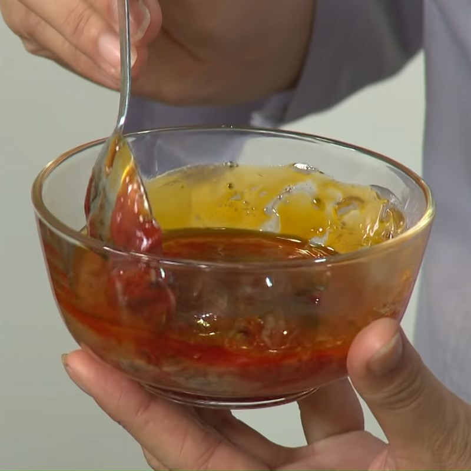
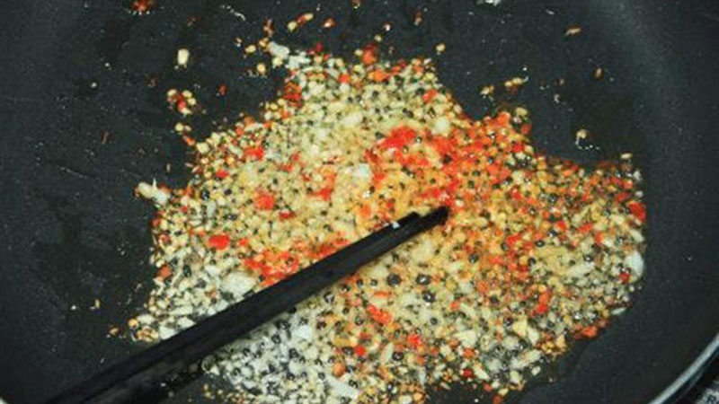

Công Thức Pad Thai Tôm
Món mì xào Thái Lan với tôm, đậu phộng, và vị chua ngọt đặc trưng.

Nguyên Liệu
- 200g mì gạo (phở khô)
- 200g tôm sú (bóc vỏ)
- 2 quả trứng gà
- 50g đậu phộng rang, giã nhỏ
- 100g giá đỗ
- 2 muỗng canh nước mắm
- 2 muỗng canh nước me
- 1 muỗng canh đường nâu
- 1 muỗng canh tương ớt
- 2 nhánh hành lá, thái nhỏ
- Tỏi, ớt khô, chanh để nêm
- Dầu ăn
Cách Làm
- Ngâm mì gạo trong nước ấm 20 phút, để ráo.
- Pha sốt: trộn nước mắm, nước me, đường nâu, tương ớt. 
- Phi thơm tỏi và ớt khô, xào tôm đến khi chín, dạt ra một bên chảo. 
- Đánh trứng vào chảo, khuấy đều, thêm mì gạo và sốt, xào nhanh tay.
- Thêm giá đỗ, hành lá, đậu phộng, trộn đều 1 phút.
- Dọn pad thai ra đĩa, rắc thêm đậu phộng, chanh, và ớt tùy thích.

Mẹo Nấu Ngon
- Xào mì ở lửa lớn để giữ độ dai và không dính chảo.
- Điều chỉnh nước me để cân bằng vị chua ngọt.
- Thêm ớt khô để tăng hương vị cay thơm.